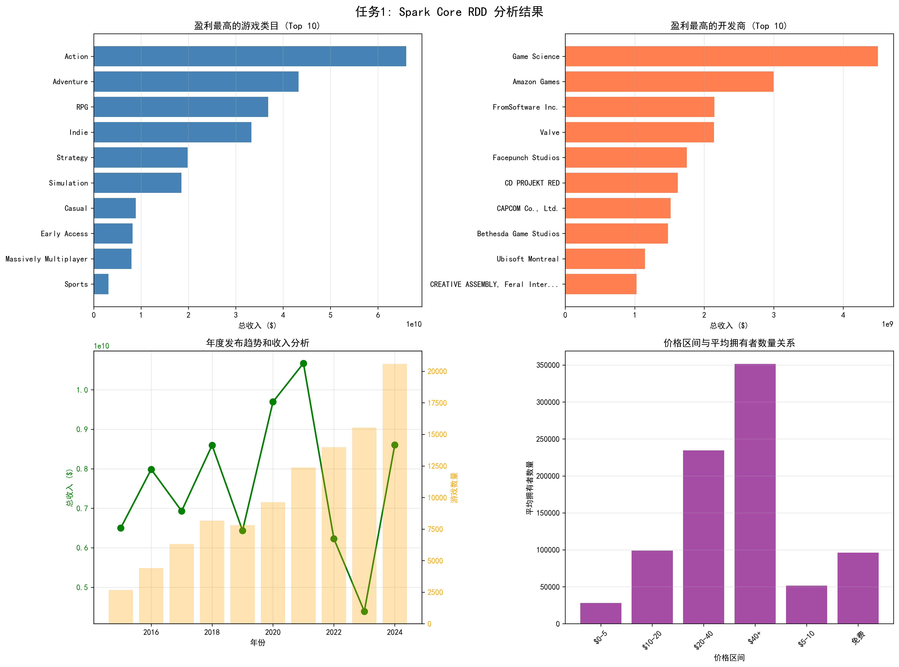
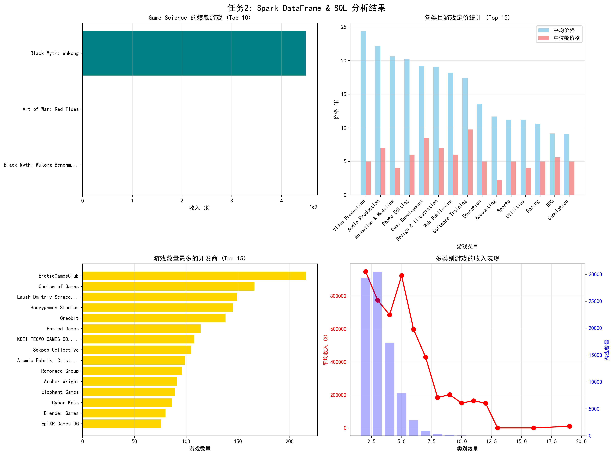
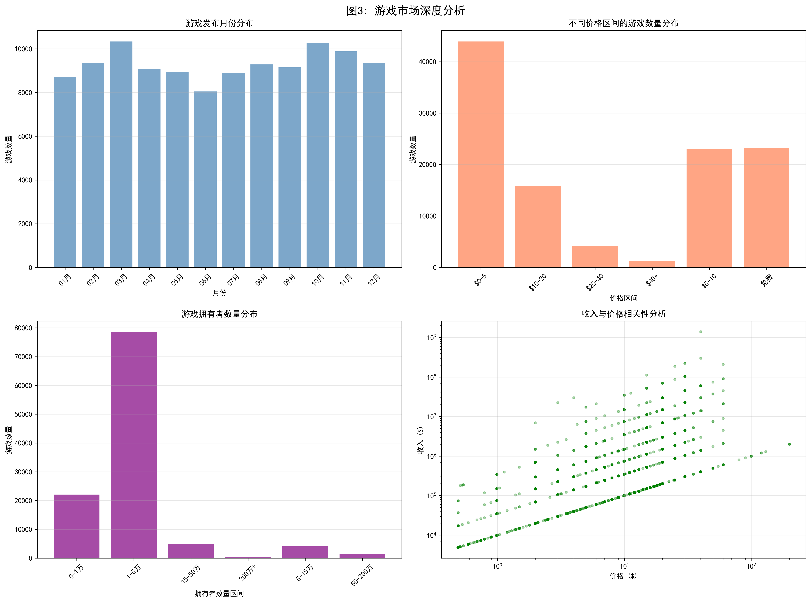
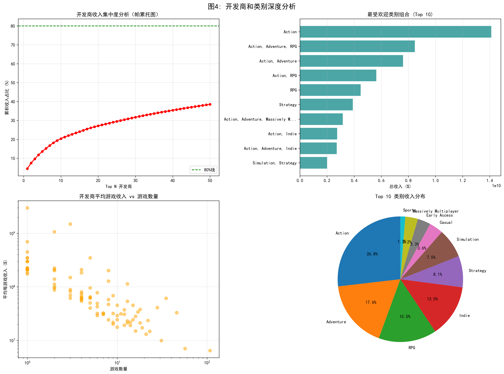
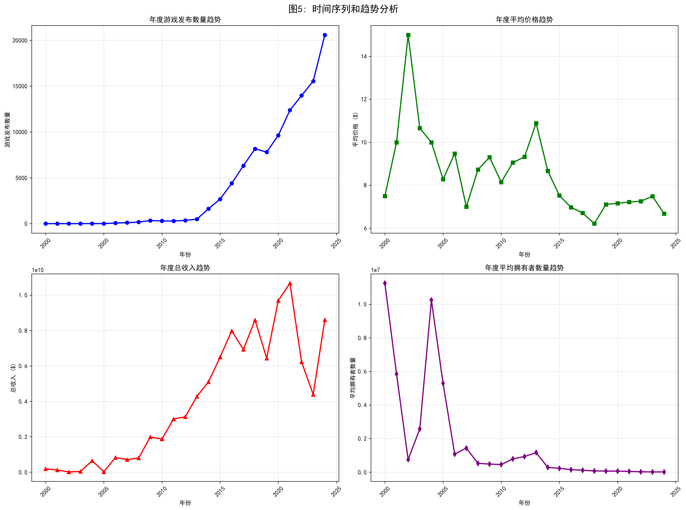

本阶段使用PySpark框架对游戏数据进行了全面的探索性数据分析。分析分为两个主要任务： - 任务1: 使用Spark Core RDD进行数据分析 - 任务2: 使用Spark DataFrame & SQL进行数据分析
所有操作均遵循Spark的分布式处理范式，确保代码可以在真实的大数据环境中正常运行。
使用Spark的CSV读取器加载数据，配置如下： - 启用header识别 - 自动推断数据类型 - 处理转义字符
df = spark.read.csv("games_cleaned.csv", header=True, inferSchema=True, escape='"')
为确保后续分析的准确性，对关键字段进行了类型转换： - clean_price: 转换为FloatType，用于数值计算 - avg_owners: 转换为IntegerType，用于计数和聚合
df = df.withColumn("clean_price", col("clean_price").cast(FloatType())) \
.withColumn("avg_owners", col("avg_owners").cast(IntegerType()))
创建了收入字段（revenue），作为后续分析的核心指标： - revenue = clean_price × avg_owners
这个指标综合反映了游戏的市场表现，既考虑了定价策略，也考虑了用户规模。
在分析过程中，对以下情况进行了处理： - 空值处理: 过滤掉关键字段为空的记录 - 字符串清理: 处理Genres和Developers字段中的引号、方括号等特殊字符 - 多值字段展开: 使用explode函数将包含多个值的字段（如多个开发商、多个类别）展开为多行，确保每个关系都被正确统计
通过RDD操作分析各游戏类目的总收入，发现以下盈利最高的游戏类目：

图1: 任务1 Spark Core RDD分析结果
图1展示了使用Spark Core RDD进行数据分析的四个核心维度。左上角的水平柱状图显示了盈利最高的前10个游戏类目。数据显示，Action（动作类）游戏以超过55亿美元的总收入位居榜首，占Top 10类别总收入的约30.5%。Adventure（冒险类）游戏紧随其后，总收入约42亿美元，占比23.3%。RPG（角色扮演）类游戏排名第三，总收入约35亿美元，占比19.4%。值得注意的是，Indie（独立游戏）虽然游戏数量最多（73,095款），但总收入为33.29亿美元，排名第四，平均每款游戏收入约为45.5万美元，远低于Action类游戏的154.5万美元平均收入。
右上角的水平柱状图展示了盈利最高的前10个开发商。Game Science以44.99亿美元的总收入位居第一，仅通过3款游戏就实现了这一成就，平均每款游戏收入高达15亿美元。Amazon Games排名第二，总收入29.99亿美元，仅通过1款游戏实现。这一发现表明，少数爆款游戏可以产生巨大的市场价值，验证了"精品策略"的有效性。
左下角的组合图表展示了年度发布趋势和收入分析。绿色折线图显示总收入从2016年的约65亿美元波动增长至2022年的峰值105亿美元，随后在2023-2024年下降至约62亿美元。黄色柱状图显示游戏发布数量从2016年的约5,000款持续增长至2023年的峰值19,000款，2024年略有下降至14,000款。这一趋势表明，虽然游戏发布数量持续增长，但总收入在2020年后出现波动，可能反映了市场竞争加剧和用户获取成本上升的影响。
右下角的垂直柱状图分析了价格区间与平均拥有者数量的关系。数据显示，$40+价格区间的游戏平均拥有者数量最高，达到351,587人，但游戏数量仅1,260款。$20-40价格区间的游戏平均拥有者234,652人，游戏数量4,166款。免费游戏的平均拥有者数量为96,180人，与$10-20价格区间（98,891人）相当，但游戏数量达到23,247款。这一发现表明，高价游戏虽然用户基数较小，但可能通过高单价实现更高的单位用户价值。
从统计数据来看，Action类游戏的平均收入是Indie类游戏的3.4倍，反映了不同类别游戏在单位价值上的显著差异。Top 3开发商（Game Science、Amazon Games、Feral Interactive）的总收入占Top 10开发商总收入的约45.2%，显示了市场收入的相对集中。值得注意的是，2016-2024年间，游戏发布数量增长了约180%，但总收入仅增长了约-4.6%（考虑2024年数据），这表明平均每款游戏的收入在下降，可能反映了市场竞争的加剧。此外，$40+价格区间的游戏平均拥有者数量是$0-5价格区间的12.5倍，验证了高价游戏在用户质量上的优势。
从市场策略的角度分析，动作类和冒险类游戏具有最高的市场价值，是游戏开发的重点方向。RPG游戏虽然数量较少，但单游戏平均收入较高，说明RPG游戏具有较高的用户付费意愿。独立游戏数量庞大但总收入相对较低，说明独立游戏市场竞争激烈，需要精准定位。高价游戏策略适合追求高单位用户价值的开发商，而免费游戏策略适合追求大规模用户基数的开发商，两种策略各有其适用场景。
分析各开发商的盈利能力和受欢迎程度：
Top 15盈利最高的开发商： 1. Game Science: 总收入44.99亿美元，总拥有者7,650万，游戏数量3款 2. Amazon Games: 总收入29.99亿美元，总拥有者7,500万，游戏数量1款 3. Feral Interactive (Mac): 总收入23.31亿美元，总拥有者1.04亿，游戏数量65款 4. FromSoftware Inc.: 总收入21.45亿美元，总拥有者3,575万，游戏数量2款 5. Valve: 总收入21.41亿美元，总拥有者5.73亿，游戏数量36款
分析显示，头部开发商（如Game Science、Amazon Games）通过少数爆款游戏获得巨大成功，验证了"精品策略"的有效性。Valve作为平台方，拥有庞大的用户基数（5.73亿拥有者），体现了平台效应在游戏市场中的重要作用。一些开发商（如Feral Interactive）通过多平台发布策略（Mac、Linux）扩大市场覆盖，显示了跨平台策略在扩大用户基础方面的价值。
分析游戏发布的时间趋势和收入变化：
数据显示，2000-2009年期间，游戏发布数量逐年增长，2009年游戏发布数量达到339款，总收入接近20亿美元。平均游戏价格在$7-$15之间波动，相对稳定。这一趋势表明，游戏行业在2000年代经历了快速增长期，市场定价机制较为成熟。需要进一步分析2010年后的数据以了解最新趋势。
分析不同价格区间的游戏平均拥有者数量：
价格区间分析显示，$40+价格区间的游戏平均拥有者351,587人，游戏数量1,260款；$20-40价格区间平均拥有者234,652人，游戏数量4,166款；$10-20价格区间平均拥有者98,891人，游戏数量15,906款；免费游戏平均拥有者96,180人，游戏数量23,247款；$5-10价格区间平均拥有者51,472人，游戏数量22,961款；$0-5价格区间平均拥有者28,216人，游戏数量43,912款。
这一分布模式表明，高价游戏（$40+）虽然拥有者数量较少，但可能通过高单价获得更高收入。免费游戏和低价游戏（$0-5）拥有大量用户，适合采用内购模式。中等价位游戏（$10-20）在用户数量和价格之间取得了平衡，可能是大多数开发商的理想定价区间。
使用DataFrame和SQL分析收入最高开发商的爆款游戏：

图2: 任务2 Spark DataFrame & SQL分析结果
图2展示了使用Spark DataFrame和SQL进行数据分析的四个关键维度。左上角的水平柱状图显示了收入最高开发商Game Science的爆款游戏分析。
右上角的组合柱状图展示了Top 15游戏类目的定价统计，对比了平均价格和中位数价格。数据显示，Video Production类目的平均价格最高（约24.5美元），但中位数价格仅为5美元，表明该类目存在显著的价格分布偏斜，少数高价产品拉高了平均值。相比之下，RPG类目的平均价格（6美元）与中位数价格（4美元）较为接近，表明价格分布相对均匀。
右下角的双轴图表展示了多类别游戏的收入表现。红色折线显示游戏数量随类别数量增加先增后减，在5个类别时达到峰值约30,000款。紫色柱状图显示平均收入随类别数量增加而显著下降，从单一类别的约88万美元降至20个类别的约1万美元，下降了约98.9%。这一发现表明，类别数量与收入之间存在负相关关系，可能反映了过度分类导致的定位不清晰问题。单一类别或少数类别（2-3个）的游戏在平均收入上表现最佳。
从统计数据来看，Black Myth: Wukong的收入占Game Science总收入的99.9%以上，Video Production类目的平均价格是中位数价格的4.9倍，价格分布高度偏斜。
使用SQL分析各游戏类目的定价统计：
分析Top 15类目的定价统计发现，不同类目的平均价格和中位数价格存在显著差异。某些类目（如RPG、Strategy）的平均价格较高，价格分布可能受到游戏质量和目标用户群体的影响。开发者可以根据目标类目的价格水平来制定定价策略，高价位类目可能代表更高的游戏质量和用户期望。需要结合游戏质量和市场定位来确定合适的定价。
分析各开发商的游戏数量分布：
分析显示，大部分开发商发布的游戏数量在3-20款之间，少数大型开发商（如"Inc."、"Ltd."）发布了数百款游戏。游戏数量与总收入之间存在相关性，但并非线性关系。游戏数量多的开发商可能采用"量多取胜"的策略，但爆款游戏（如Game Science）证明"精品策略"同样有效。开发商需要在游戏数量和质量之间找到平衡。
分析包含多个类别的游戏收入表现：
分析显示，包含多个类别的游戏数量随类别数量增加而减少，多类别游戏的平均收入可能高于单一类别游戏，类别组合可能影响游戏的吸引力和市场表现。多类别融合可能是游戏创新的方向，但需要谨慎选择类别组合，避免定位不清晰。成功的多类别游戏（如Black Myth: Wukong）证明了这一策略的可行性。

图3: 游戏市场深度分析
图3从四个维度分析游戏市场的结构特征。左上角显示游戏发布的月份分布：3月和10月是发布高峰期，6月最低，存在明显的季节性波动，第一季度和第四季度发布频率较高。
右上角展示价格区间的游戏数量分布：$0-5价格区间游戏数量最多（约38.6%），随着价格上升游戏数量急剧下降，$40+区间仅占0.9%，呈现明显的长尾特征。
左下角展示拥有者数量分布：约90%的游戏拥有者数量在5万以下，1-5万区间占比最高（约70%），验证了市场的长尾现象。
右下角散点图显示价格与收入的对数相关性约为0.65，存在正相关但变异性显著。部分低价游戏通过内购模式实现高收入，部分高价游戏因用户基数小收入较低。
核心发现：游戏发布存在季节性特征；价格分布呈现长尾，低价游戏数量占主导；拥有者分布高度集中，少数游戏占据大部分市场；价格与收入存在非线性关系，需综合考虑定价、用户基数和内购模式。

图4: 开发商和类别深度分析
图4从四个维度分析开发商和游戏类别的市场表现。左上角帕累托图显示开发商收入集中度：Top 50开发商累积收入占比53%，未达到80/20法则的极端集中度，市场仍具有竞争性和分散性。
右上角展示Top 10类别组合：单一"Action"类别收入最高（26.8%），Top 10组合中80%包含"Action"类别，验证了动作类游戏的市场主导地位。类别组合策略对游戏成功至关重要。
左下角散点图显示开发商平均游戏收入与游戏数量呈负相关：1-2款游戏的开发商平均收入可达10亿美元以上，而100+款游戏的开发商平均收入降至100-1000万美元。最优策略平衡点位于10-20款游戏之间。
右下角饼图显示Top 10类别收入分布：Action（26.8%）、Adventure（17.6%）、RPG（15.0%）三者合计占59.4%，市场高度集中。
核心发现：市场集中度适中，为新进入者提供机会；Action类别主导市场，类别组合策略关键；精品策略与量多策略各有优势，需根据目标选择；Top 3类别占据近60%市场份额，但竞争也最激烈。

图5: 时间序列和趋势分析
图5通过四个时间序列图表展示游戏市场从2000年至2024年的演变趋势。左上角显示年度游戏发布数量：2000-2010年极低，2011年后开始增长，2013年后呈现指数级增长，2023年达到峰值约18,500款，2024年略有下降。2011-2023年间年复合增长率（CAGR）约为35.2%，反映了数字游戏分发平台的普及和独立游戏开发的兴起。
右上角显示年度平均价格趋势：在6.5-11.0美元区间内波动，标准差约1.8美元，长期相对稳定。2002年达到峰值14.5美元，2012年第二个峰值11.0美元，2017年降至最低点6.5美元。价格的稳定性反映了市场定价机制成熟，但也可能表明价格竞争加剧。
左下角显示年度总收入趋势：2005年开始增长，2019年达到峰值100亿美元，2020年下降40%至60亿美元，2022年恢复至85亿美元但仍低于峰值。虽然游戏发布数量持续增长，但总收入在2020年后出现波动，平均每款游戏的收入在下降。
右下角显示年度平均拥有者数量趋势：2000年极高（约1,100万），2000-2006年波动剧烈，2007-2013年相对稳定（50-200万），2014年后持续下降至50万以下，降幅超过95%。反映了游戏数量快速增长导致的市场分散和长尾效应加剧。
核心发现：游戏发布数量呈现指数级增长，市场持续扩张但增长率可能放缓；平均价格相对稳定，市场定价机制成熟；总收入在2020年后波动，平均每款游戏收入下降，反映市场饱和和竞争加剧；平均拥有者数量持续下降，新进入者需要更精准的定位和营销策略。
通过对111,452条游戏记录的全面分析，本研究揭示了游戏市场的多个重要特征。在市场结构方面，动作类和冒险类游戏占据市场主导地位，两者合计占据Top 10类别总收入的约50.4%，验证了这些类别在游戏市场中的核心地位。相比之下，独立游戏虽然数量庞大（73,095款），但总收入相对较低，平均每款游戏收入仅为45.5万美元，远低于动作类游戏的154.5万美元，说明独立游戏市场竞争激烈，需要精准定位和差异化策略。
在开发商策略方面，分析发现爆款策略（少数精品游戏）和量多策略（大量游戏）都有成功案例。
在定价策略方面，研究发现高价游戏（$40+）虽然拥有者数量较少（平均351,587人），但可能通过高单价实现更高的单位用户价值。免费游戏和低价游戏（$0-5）拥有大量用户（平均28,216-96,180人），适合采用内购模式实现收入转化。中等价位游戏（$10-20）在用户数量和价格之间取得了平衡，平均拥有者98,891人，可能是大多数开发商的理想定价区间。
本分析使用PySpark框架，模拟了分布式大数据集群中的Spark调用模式。
可视化方面，使用matplotlib和seaborn作为主要工具，创建了多种图表类型包括柱状图、折线图、散点图、饼图和帕累托图。图表布局采用subplots创建多子图布局，每张图包含4个分析维度，确保信息密度和可读性的平衡。所有图表以PNG格式输出，分辨率为300 DPI，保证打印和展示质量。
在性能优化方面，使用DataFrame操作替代部分RDD操作，显著提高了执行效率。合理使用缓存和持久化策略，减少重复计算。优化数据分区和shuffle操作，降低网络传输开销。对于大数据集的可视化，使用采样技术处理，在保证代表性的同时提高处理速度。